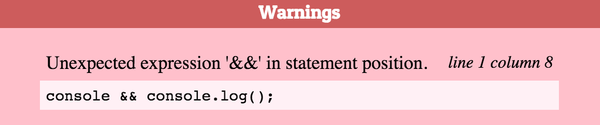

Don't use short-circuiting when you want an if statement
Evaluation short-circuiting is a feature of the logical operators AND and OR. It is meant to speed up code execution, but sometimes it's misused to simulate if statements.
This article shows how it works and when using it is a bad idea.
What is evaluation short circuiting?
Usually, the && operator is used with two expressions that evaluate to a boolean value. Such an expression could be x === 5 or a function call like isUserLoggedIn().
We can have an AND operator with two expressions like this:
functionThatReturnsFalse() && functionThatReturnsTrue()
Then, after running the first function and obtaining false as the result, there's no point in also calling functionThatReturnsTrue. Whatever the second value for the && operator is, we know that at least one operand is false.
Our expression evaluates to false && ANYTHING, which will always evaluate to false, regardless of what ANYTHING is.
When JavaScript stops evaluating the operands of the AND operator, that's called short-circuiting.
The Anti-Pattern
Short-circuiting is a useful behavior to avoid unnecessary computations. However, it can be misused to create the same behavior as an if statement.
Take this example:
hasUserId && logUserIn();
It's equivalent to this if statement:
if (hasUserId) {
logUserIn();
}
This works because both bits of code evaluate the logUserIn part of the code only if hasUserId is true.
However, unlike an if statement, the AND operator doesn't communicate a conditional operation to the developer who's reading the code.
This technique is often used with non-boolean values. This makes it easier to work with values that might be undefined.
Here are two common examples:
callback && callback();
console.log && console.log();
In the first case, the callback function is only run when it has been assigned a value. If we called callback() without this check and its value was undefined we would get an error message:
Uncaught ReferenceError: callback is not defined
But with short-circuiting, execution can skip the instruction if no callback has been set.
The second example works in a similar way. Some browsers don't implement a debugging console. Attempting to call console.log in these browsers would throw a ReferenceError.
However, console && console.log() won't attempt to call the log method if console is falsy.
Why using short-circuiting instead of an if statement is an anti-pattern
Using short-circuiting makes code difficult to read. An if statement clearly communicates that the code should only be run if a condition is fulfilled. But using a logical operator for the same purpose is just confusing.
This problem is made worse by how difficult it is to Google for this behavior. Because it's not the expected use of the AND operator it's hard to find a page explaining how short-circuiting can create if-like behavior.
Using this behavior can appeal to developers because of its brevity and cleverness, but it makes the code more difficult to work with.
Use an if statement for conditional execution.
Detecting use of the anti-pattern with jsHint or jsLint
Linters like jsHint or jsLint help detect common errors and anti-patterns.
The console.log example from above would cause this error message to appear:

Short-circuiting with the OR Operator
I've previously written about how the || operator is sometimes used to set default values for function parameters, and why this can lead to errors.